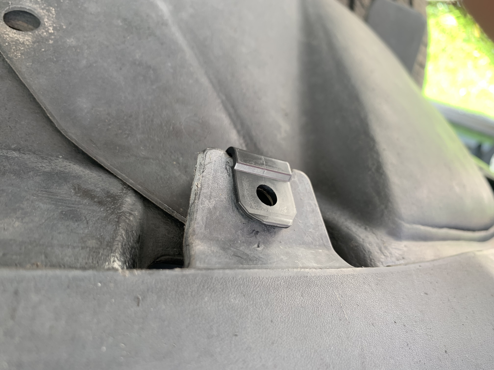
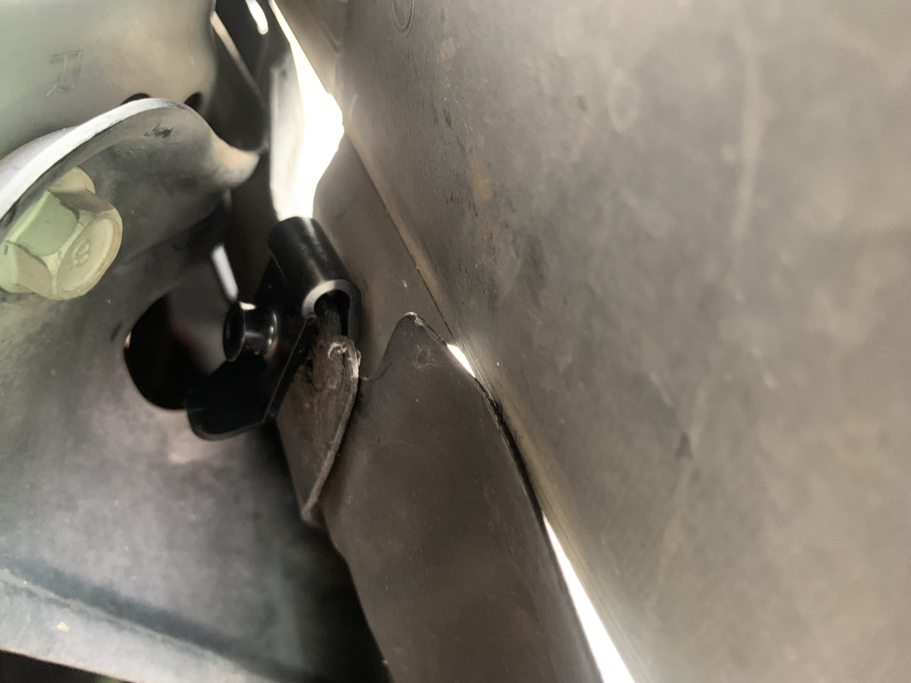
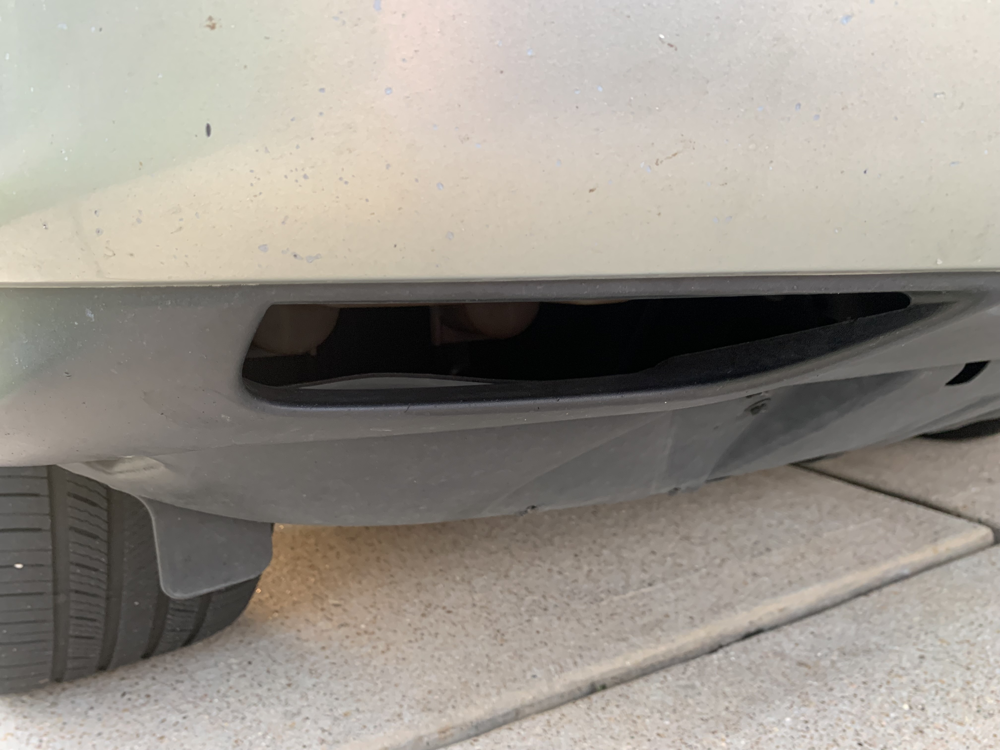
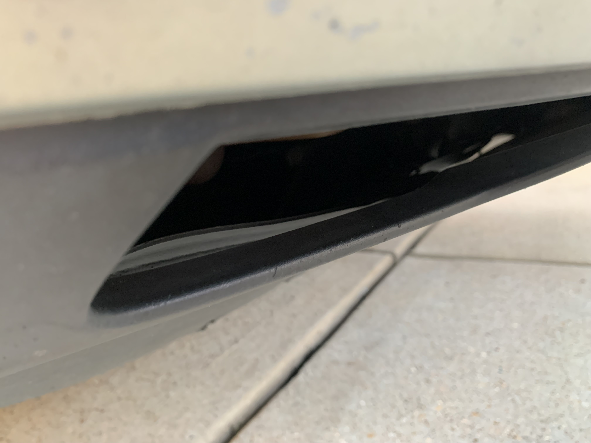
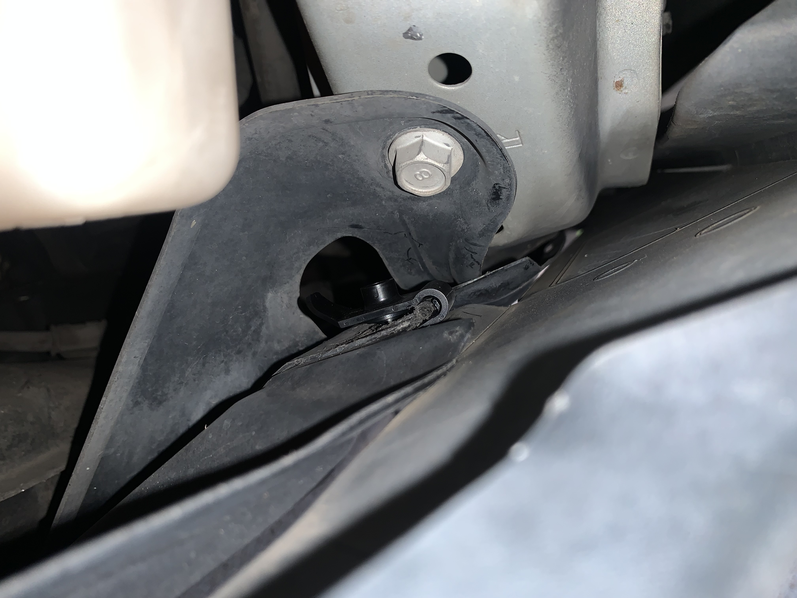
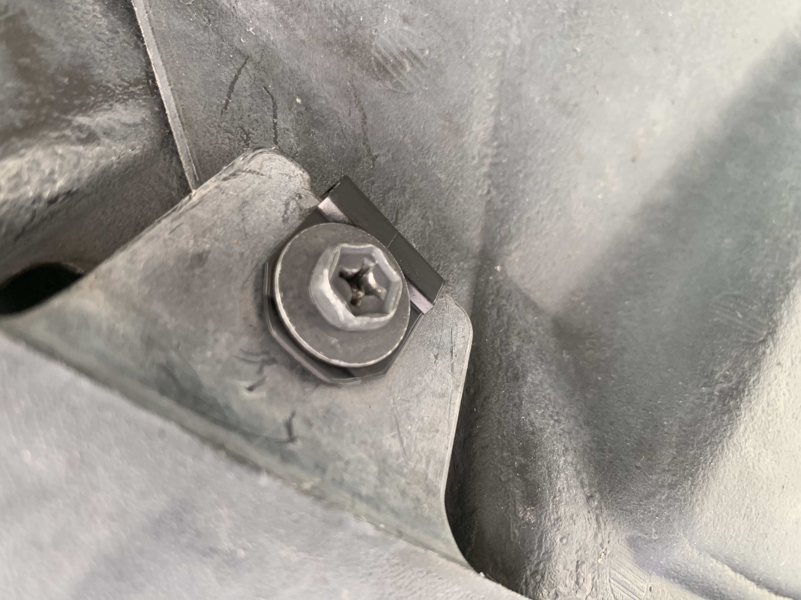
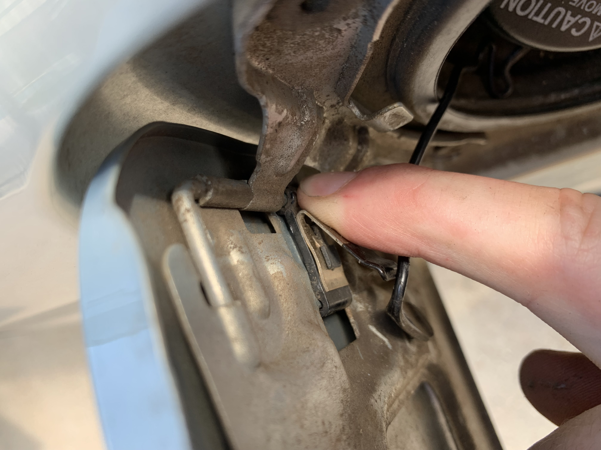
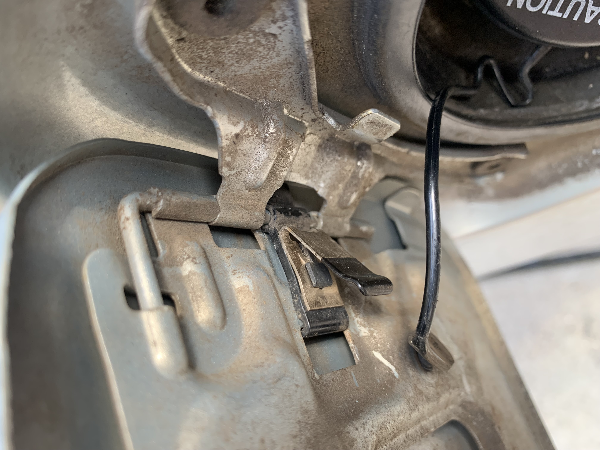

Fixable
2004 Lexus RX 330 Undercarriage Plastic Holders
| Part Numbers | Part Name | Quantity |
|---|---|---|
| 9046705114 | Plastic Holder Clips | 2 |
| 9015960477 | Temporary Screws (To go inside Plastic Holder Clips) | 2 |
Steps:
First, Screw the Screws into the Plastic Holder Clips You may need to use the screwdriver, privded by the kit lexus has, inorder to screw the screw to the desired position, located in Figure 1.

After the screws have been screwed into their Plastic Holder Clips, place the shorter end of the clip onto the plastic tab coming from the front bumper. You should feel it make its way into position and you may hear a click to it as well. Take a look at Figure 2 to see what tab it is and what the Plastic Holder Clip looks like when it is fully seated into position.

Next, feed the larger end of the clip onto the two other plastic plates. It should look like Figure 3. An easy way to tell if this has been completed correctly is by looking through the gap to the left (or right) of the plastic tab. The gap you are looking for is shown in Figure 4, 5, and 6. Figure 6 shows what you can see from that gap.

  
After the clip has been installed correctly, now its time to screw the screw into the clip for the last time! What will be needed is a screwdriver and some patience. Take the screwdriver and screw the screw into the hole until it is tight. It should look like Figure 7.

After the screw is in the correct position, push on the plastic peices being held in just to verify they do not move. If they do not move the job is now complete.
2004 Lexus RX 330 Fuel Door Spring
| Part Numbers | Part Name | Quantity |
|---|---|---|
| 77360-0E010 | Fuel Door Spring | 1 |
Steps:
-
Open Fuel Door

-
Position Spring as shown in Figure 8, shown off to the right.

-
Press on plastic clip as shown in Figure 9, shown off to the right.
-
Provided is a short clip, Installation of Spring, to show the process.

-
This is what the final result should look like Figure 10, shown off to the right. Once the spring is in the final result, the job is now complete.